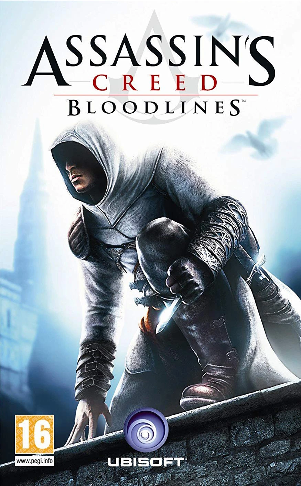

Os Laços
Ainda preso nos laboratórios da Abstergo em 2012, Desmond Miles utiliza arquivos de memória
remanescentes do Animus para preencher as lacunas deixadas após sua primeira simulação. Ele
volta a assumir o controle de um Altaïr Ibn-La'Ahad mais maduro e sábio, situando-se logo após a
queda de Al Mualim, no ano de 1192.
Com a Terra Santa livre de seus antigos alvos, Altaïr viaja até a ilha de Chipre para caçar o
restante da Ordem dos Templários, que fugiu e estabeleceu um regime opressor na região sob a
liderança do novo Grão-Mestre, Armand Bouchart. Acompanhado por Maria Thorpe — uma cativa
Templária cujas convicções começam a vacilar —, Altaïr deve se aliar à resistência cipriota para
impedir que Bouchart tome o controle do lendário "Arquivo Templário", um cofre secreto repleto
de Pedaços do Éden e conhecimentos da Primeira Civilização.